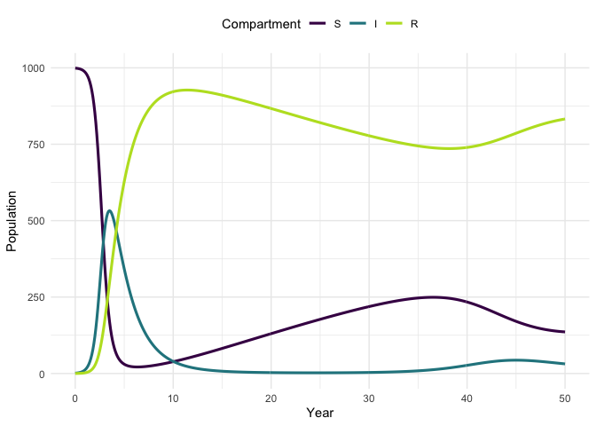

Explore a range of infectious disease models in a consistent framework. The primary aim of idmodelr is to provide a library of infectious disease models for researchers, students, and other interested individuals. These models can be used to understand the underlying dynamics and as a reference point when developing models for research. idmodelr also provides a range of utilities. These include: plotting functionality; a simulation wrapper; scenario analysis tooling; an interactive dashboard; tools for handling mult-dimensional models; and both model and parameter look up tables. Unlike other modelling packages such as pomp, libbi and EpiModel, idmodelr serves primarily as an educational resource. It is most comparable to epirecipes but provides a more consistent framework, an R based workflow, and additional utility tooling. After users have explored model dynamics with idmodelr they may then implement their model using one of these packages in order to utilise the model fitting tools they provide. For newer modellers, this package reduces the barrier to entry by containing multiple infectious disease models, providing a consistent framework for simulation and visualisation, and signposting towards other, more research, focussed resources.
Installation
Install the CRAN version:
install.packages("idmodelr")
Alternatively install the development version from GitHub:
# install.packages("devtools") devtools::install_github("seabbs/idmodelr")


Quick start
In this quick start guide we are going to be defining, simulating and plotting a Susceptible-Infected-Recovered deterministic compartmental model with simple population demographics (births = deaths). The first step is to load the idmodelr package.
library(idmodelr)
The next step is to find the model of interest amongst those implemented in idmodelr. model_details lists all of the models implemented in idmodelr and can be search using dplyr, base R, or other dataframe tools.
library(dplyr) #> #> Attaching package: 'dplyr' #> The following objects are masked from 'package:stats': #> #> filter, lag #> The following objects are masked from 'package:base': #> #> intersect, setdiff, setequal, union model_details %>% dplyr::filter(model_family %in% "SIR") %>% knitr::kable()
| model | model_family | time | type | recovered | exposed | treated | susceptible | risk_stratified | non_exponential | simple_demographics | vaccination | disease_example | language | parameters |
|---|---|---|---|---|---|---|---|---|---|---|---|---|---|---|
| SIR_ode | SIR | continuous | deterministic | no | no | no | no | no | no | no | no | none | R | c(“beta”, “tau”) |
| SIR_demographics_ode | SIR | continuous | deterministic | no | no | no | no | no | no | yes | no | none | R | c(“beta”, “tau”, “mu”) |
| SIR_vaccination_ode | SIR | continuous | deterministic | no | no | no | no | no | no | no | yes | none | R | c(“beta”, “tau”, “lambda”) |
| SIR_vaccination_demographics_ode | SIR | continuous | deterministic | no | no | no | no | no | no | yes | yes | none | R | c(“beta”, “tau”, “lambda”, “alpha”, “mu”) |
Now look at the model and the model help file (?SIR_demographics_ode) to get an understanding of how the model is constructed.
SIR_demographics_ode #> function(t, x, params) { #> #> ## Specify model compartments #> S <- x[1] #> I <- x[2] #> R <- x[3] #> #> with(as.list(params),{ #> #> ## Specify total population #> N = S + I + R #> #> ## Derivative Expressions #> dS = - beta * S * I / N - mu * S + mu * N #> dI = beta * S * I / N - tau * I - mu * I #> dR = tau * I - mu * R #> #> ## output #> derivatives <- c(dS, dI, dR) #> #> list(derivatives) #> }) #> } #> <bytecode: 0x55e88e6356c0> #> <environment: namespace:idmodelr>
Check the parameters required by the model using required_parameters. This returns a table containing all the parameters that must be defined in order to use the model as well as descriptive information for each parameter.
parameters <- required_parameters("SIR_demographics_ode") knitr::kable(parameters)
| parameter | parameter_family | description | type | risk_stratified | non_exponential |
|---|---|---|---|---|---|
| beta | transmission | Transmission rate = the transmission probability per contact * the number of contacts each individual has. | rate | no | no |
| tau | recovery | Recovery rate. The reciprocal of the time infectious. | rate | no | no |
| mu | demographics | The natural mortality rate. The reciprocal of the average lifespan. (for simple demographics this is also the birth rate. | rate | no | no |
Parameterise the model.
parameters <- data.frame( beta = 3, ##Transmission rate = contact rate * transmission probablity tau = 0.5, ## Rate recovcery = 1 / duration of infection mu = 1/81 ## Natural birth/death rate = 1 / average lifespan )
Check the initial conditions required by looking at the start of the model function. In most cases this should match up to the model name (i.e S, I and R for an SIR model) but risk stratification etc. will require additional compartments.
inits <- data.frame( S = 999, I = 1, R = 0 )
Specify the timespan over which to run the model.
times <- seq(0, 50, 0.1)
Simulate the model.
traj <- simulate_model(model = SIR_demographics_ode, sim_fn = solve_ode, ##as solving an ode inits = inits, params = parameters, times = times) traj #> # A tibble: 501 x 4 #> time S I R #> <dbl> <dbl> <dbl> <dbl> #> 1 0 999 1 0 #> 2 0.1 999. 1.28 0.0567 #> 3 0.2 998. 1.64 0.129 #> 4 0.3 998. 2.11 0.222 #> 5 0.4 997. 2.70 0.342 #> 6 0.5 996. 3.46 0.494 #> 7 0.6 995. 4.43 0.690 #> 8 0.7 993. 5.67 0.940 #> 9 0.8 991. 7.25 1.26 #> 10 0.9 989. 9.28 1.67 #> # … with 491 more rows
Summarise the model.
summarise_model(traj) %>% knitr::kable()
| Final size: S | Final size: I | Final size: R | Epidemic peak time | Epidemic peak | Epidemic duration |
|---|---|---|---|---|---|
| 136 | 31 | 833 | 3.5 | 533 | Inf |
Plot the model trajectory.
plot_model(traj, facet = FALSE)

Vary the model parameters, by increasing the mortality rate, and then simulate the updated model.
parameters_up <- parameters parameters_up[["mu"]] <- 1 / 20 traj_up <- simulate_model(model = SIR_demographics_ode, sim_fn = solve_ode, inits, parameters_up, times)
Plot the original trajectory and the updated trajectory. What has the impact of increasing mortality been?
plot_model(traj, traj_up, facet = TRUE)
See the package vignettes for more help getting started and some additional ideas for exploring infectious disease model dynamics.
Dashboard
A shiny application has been developed that showcases some of the functionality of the idmodelr package. This application allows the parameter spaces of a range of models built into idmodelr to be explored in an interactive session. It is designed to be used as a teaching aid when introducing people to the concepts behind infectious disease models without requiring them to interact with the underlying code. The code for the dashboard can be found here. It can be run locally using the following (Note: this will install required packages to your system),
#install.packages("shiny") shiny::runGitHub("exploreidmodels", "seabbs")

Contributing
Contributing a model
Additional models are extremely welcome!
To add models in the same family as those already implemented (i.e SIR_ode) please follow the implemented coding style closely (alternatively open an issue explaining why this style needs updating). Models should be named using their compartments in capitals followed by lower case model details, and finally the model type. An example of this is the SIR_demographics_ode model. For highly complex models only the most major model details should be listed (aim for less than 40 characters). An entry for model_details is also required (see model_details.R). If new parameters have been used then a description must be added to parameter_details (see parameter_details.R). Please consider also adding to the testing suite for your new model (or flagging the lack of tests). Models can either be added via a pull request or via an issue.
To add a new family of models (i.e stochastic models) please open an issue outlining your proposed approach. A new family of models is likely to require at least its own solve_ (equivalent to solve_ode) function and may also require other package changes. Models implemented in other languages (i.e C) are also very welcome.
Other contributions
File an issue here if there is any other feature, that you think is missing from the package, or better yet submit a pull request!
Please note that the idmodelr project is released with a Contributor Code of Conduct. By contributing to this project, you agree to abide by its terms.
Docker
This packge was developed in a docker container based on the tidyverse docker image. To run the docker image run:
The rstudio client can be found on port :8787 at your local machines ip. The default username:password is seabbs:seabbs, set the user with -e USER=username, and the password with - e PASSWORD=newpasswordhere. The default is to save the analysis files into the user directory. Alternatively, access the development environment via binder.